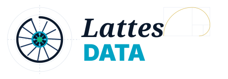
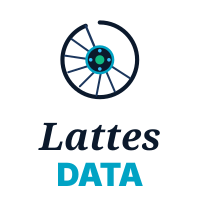

01. Master Primária
Uso Principal
Arquivo:
01-logo-master-horizontal.svg
380 × 130px
02. Com Grid Fibonacci
Institucional / Manifesto

Arquivo:
02-logo-master-com-grid-fibonacci.svg
460 × 160px
03. Horizontal Linear
Navbars & Rodapés
Arquivo:
03-logo-horizontal-linear.svg
440 × 80px
04. Vertical (Selo)
Medalhas & Capas A4

Arquivo:
04-logo-vertical-selo.svg
200 × 210px
05. Dark Mode
Fundo Escuro
05-logo-dark-mode.svg
06. P&B Positivo
100% Preto
06-logo-monocromatica-preta.svg
07. Isotipo Puro
Favicon & App

08-simbolo-isotipo-isolado.svg